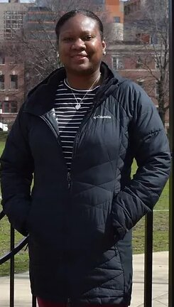
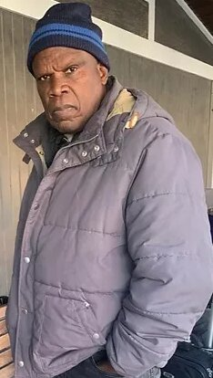
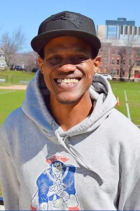
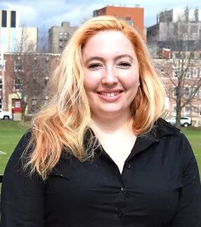

Karen Ambrose
Candidate for Re-election 2024
About Me
Hi, I am Karen Ambrose. I have lived in Brookline for over 18 years.
I work as a healthcare administrator at Children's and have a 17 year-old son with special needs.
Since elected, I have worked on the Juneteenth committee (twice), the Police Commissioner's Search Committee, and the Police Commissioner's Advisory Committee.
"I am very passionate about special education advocacy, especially for minorities, who often do not have access to adequate resources to see that their child's needs are being properly met."
Where to Find Me
I live at 93 Walnut Street, #2, with my parents and my son.
You can email me at:
karen_ambrose@comcast.net
You can text me at
617-449-8184.
It might take me a little time to get back to you when I am at work.
"I believe that Brookline needs more affordable housing to continue to become a diverse and welcoming community. I plan on addressing education needs by advocating for an adequate number of qualified teachers, as well as more widespread diversity among educators in our school system."

Thomas Ambrose
Candidate for Re-election 2024
About Me
I was born in St. Lucia and I have lived right here on Walnut Street for over 20 years.
I am a retired school teacher and have been active with all types of volunteer organizations that assist underprivileged people to have a better quality of life.
"We need more affordable housing and more spaces for people to interact socially, which will improve the overall mental health and family life of the Town."
Where to Find Me
I live at 93 Walnut Street, #2.
You can email me at:
thomas_ambrose@comcast.net
You can call me at: 617-731-8187
I love to travel and to share what I learn on my travels. I appreciate the natural and manmade beauty of our world.
"I am very concerned about climate and environmental issues. I have been involved in all aspects of environmental matters and will continue to advocate to protect the planet."
Paul Hsieh
Candidate for Re-election 2025
About Me
I was born in California. My parents are immigrants from China. I speak fluent Mandarin.
I have lived in Brookline for almost 27 years. My daughters both graduated from Lincoln and BHS.
I have a PhD in physics and have worked on many types of scientific projects.
"I want to make our Town and our world safer and more sustainable for my daughters and all of our families."
Where to Find Me
I live at 115 Walnut Street, #3.
You can email me at:
paul_f_hsieh@gmail.com
You can call me at:
857-488-2368
You can find me in the neighborhood walking with my wife and my daughters.
"The most critical issue facing Brookline is the divisiveness found in national politics. I believe we can work together to address the real issues and face our biggest challenge - the climate crisis."

Donelle O'Neal
Candidate for Re-election 2025
About Me
I am Donelle O'Neal, Sr. I grew up right here in Brookline and graduated from BHS.
I may be the longest serving member on Town Meeting from Precinct 4. I am serving my fifth term as a Town Meeting member
I am currently on the Human Services and Public Safety Subcommittees of the Advisory Committee. I am also a board member of Brookline PAX.
"I believe the biggest issues facing Precinct 4 include commercial development and zoning, the availability of low-income housing, and creating a community center."
Where to Find Me
I live at 68 Village Way.
You can email me at:
donelle617@gmail.com
You can call me at:
857-243-3602
You can find me all over Brookline with my 2 sons, Donelle Jr and Donte, and our dog, Cece.
"We need to create a community that is cohesive with opportunities for all residents to achieve their full potential. I want everyone in our town to be treated with kindness and respect."
Shawn O'Neal
Candidate for Re-election 2024
About Me
I am Shawn Kerry O'Neal. I have lived in Brookline for over 35 years.
I was born with cerebral palsy and I am currently wheelchair bound.
I have been very active in tenant advocacy at my home in 22 High Street.
"If we do not take care of those in our community who have the greatest need, how can we claim to be a just community?"
Where to Find Me
I live at 22 High Street, #36.
You can email me at:
onealshawnoneal@gmail.com
You can call me at:
857-225-0403
You can find me speeding through the neighborhood in my chair, but you might have to jog a little to catch up with me!
"I believe Brookline needs more low-income housing and that we have a significant problem with hunger in our community. We need to fix that."

Vena Priestly
Candidate for Re-election 2025
About Me
I am Vena Priestley. My family comes from a diverse background, and we have lived in Brookline for 4 generations.
I grew up in BHA housing, and I have 4 children, ages 5-16.
I am a real estate agent with Rise Realty.
Since my re-election, I have served on the Black 'N Brown Childcare Development and the search committee for the new executive director of Steps to Success.
"Speaking up for people who don't have a voice at the table is really important to me. As a mother, I really value education."
Where to Find Me
I live at 8 Juniper Street, #31.
You can email me at:
priestlyvena@gmail.com
You can call me at:
617-935-6158
You can find me almost everywhere chasing after my kids.
"Childcare for low-income parents is a huge issue in Brookline because only 1 of the 75 childcare centers accepts vouchers. Every child deserves a quality early childhood education HERE in Brookline."

Marianna Yang
Candidate for Re-election 2025
About Me
I am an immigrant and have lived in Brookline since 2014.
I have two young sons at the Pierce School, who keep me very busy.
I am a legal aide lawyer and teacher.
"I believe we must exam the impact of Town decisions on access and equity. We must prioritize actions that place a clean and sustainable environment for everyone at the forefront of Town decisions."
Where to Find Me
I live at 150 Walnut Street, #2.
You can email me at:
mariannayang@gmail.com
You can call me at:
714-272-1736
You can often find me in the neighborhood walking my dog, Sally. Come say "Hi"!
"My approach begins with equitable access to Town resources and protecting the environment."